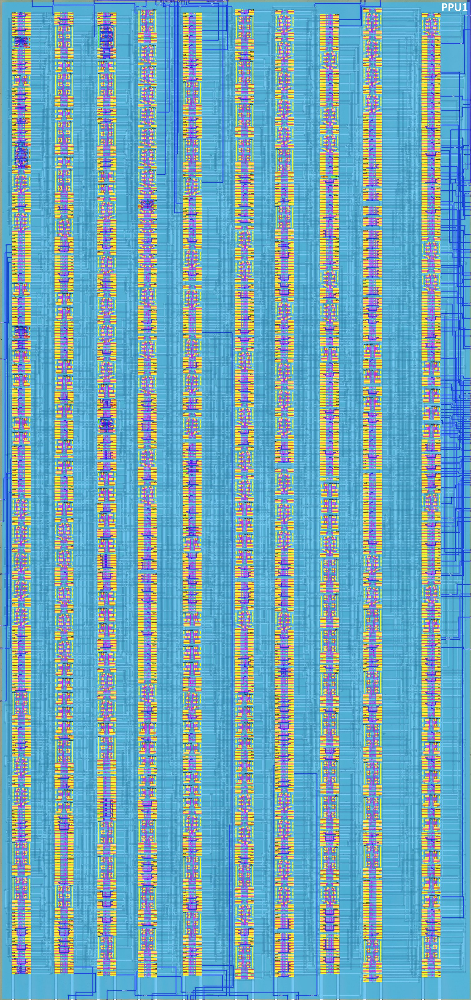
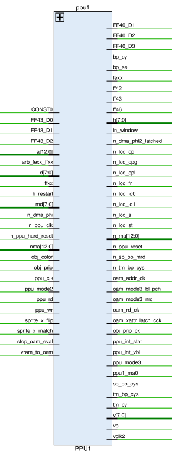
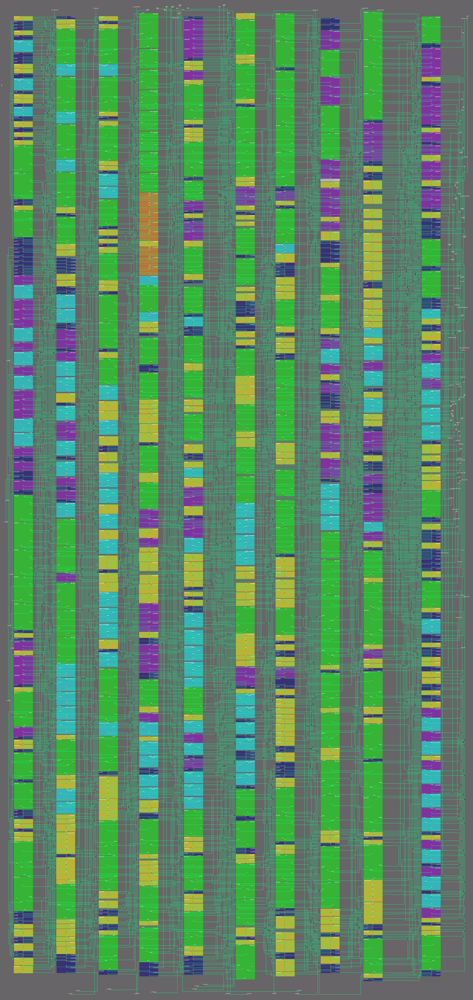

PPU1
The netlist (
HDL/soc/ppu1.v) has been annotated: the design is split into functional blocks and each block is described below. The signal table is filled based on the netlist. Block descriptions were cross-checked against @msinger's DMG-CPU B schematics (dmg-schematics) and the Pan Docs.

Role in the SoC
PPU1 is the "video / LCD" half of the PPU. The two PPU blocks are split as follows:
- PPU1 (this page): the BG/WIN (background/window) part of the pipeline, the pixel serializers, the palettes and the pixel mux, the LCD driver interface, the H/V counters, the register decode and most of the PPU registers.
- PPU2: the part closer to Objects and OAM ("sprites"): OAM scan, sprite X arithmetic, mode generation. PPU2 outputs the object attributes to PPU1 (
obj_color,obj_prio,sprite_x_flip,sprite_x_match,ppu_mode2) and receives the render timing from PPU1 (oam_addr_ck,oam_rd_ck,oam_xattr_latch_cck,obj_prio_ck,ppu_mode3, the H/V counter values).
Both parts communicate closely with a bunch of signals: PPU1 generates the VRAM addresses (nma/n_ma), the CPU-visible register access indicators (ff42, ff43, ff46, fexx, FF40_D1..3), and the LCD driver outputs.
The netlist is a flat gate-level Verilog: 916 cells, 128 assign statements, 64 ports (the only hierarchical cell is the const cell g867). The cell inventory:
| Cell type | Count | Cell type | Count | Cell type | Count |
|---|---|---|---|---|---|
| not | 211 | dffsr | 48 | notif1 | 12 |
| nand | 109 | latchr_comp | 37 | or3 | 12 |
| notif0 | 98 | latch_comp | 24 | nor | 17 |
| dffr | 81 | latchnq_comp | 24 | nand5 | 17 |
| not2 | 51 | xnor | 19 | xor | 15 |
| and | 49 | and3 | 13 | nor3 | 9 |
| or | 8 | nor_latch | 8 | dffr_comp | 8 |
| mux | 8 | aon2222 | 7 | not3 | 7 |
| nand3 | 6 | nand7 | 4 | nand4 | 3 |
| and4 | 3 | not4 | 2 | nand_latch | 2 |
| nor4 | 2 | nor8 | 1 | const | 1 |
Bus conventions
The internal buses (d, md, nma, n_ma) use the old-school precharged, inverse-hold technique: drivers are inverting tristates (notif0/notif1) that pull the wire to the inverse of the data while enabled; otherwise the wire holds its precharged value. Hence e.g. n_ma (the external VRAM address) is the inverse-hold form of the internal address.
Signals
Boundary view
This table lists every PPU1 port, including the PPU1↔PPU2 handshake nets. The whole-PPU external interface (PPU1+PPU2 vs ClkGen / CPU / MMIO / Arbiter / OAM / pads, internal PPU1↔PPU2 nets excluded) is on the PPU SoC boundary page.

| Signal Name | Direction | From / Where To | Description |
|---|---|---|---|
| CONST0 | Bidir | Global | Constant 0 signal 1 |
| FF43_D0 | Input | From PPU2 | SCX register ($FF43) bit 0 (background X scroll, fine bits) |
| FF43_D1 | Input | From PPU2 | SCX register ($FF43) bit 1 |
| FF43_D2 | Input | From PPU2 | SCX register ($FF43) bit 2 |
| [12:0] a | Input | From Core | Internal address bus (VRAM access, 13 bits) |
| arb_fexx_ffxx | Input | From Arb | Arbitration of FExx (VRAM/OAM) vs FFxx (registers) accesses |
| [7:0] d | Bidir | Global | Internal data bus |
| ffxx | Input | From Arb | FFxx register area indicator |
| h_restart | Input | From PPU2 | H counter restart |
| [7:0] md | Bidir | Global | Internal video memory data bus (VRAM) |
| n_dma_phi | Input | From MMIO | DMA clock (inverted) |
| n_ppu_clk | Input | From PPU2 | PPU clock (inverted) |
| n_ppu_hard_reset | Input | From PPU2 | PPU hard reset (active low) |
| [12:0] nma | Bidir | Global | Internal video memory address bus between PPUs (inverse hold) |
| obj_color | Input | From PPU2 | Object color |
| obj_prio | Input | From PPU2 | Object priority |
| ppu_clk | Input | From PPU2 | PPU clock |
| ppu_mode2 | Input | From PPU2 | PPU Mode 2 (OAM scan) indicator |
| ppu_rd | Input | From PPU2 | PPU read strobe |
| ppu_wr | Input | From PPU2 | PPU write strobe |
| sprite_x_flip | Input | From PPU2 | Sprite X flip |
| sprite_x_match | Input | From PPU2 | Sprite X match |
| stop_oam_eval | Input | From PPU2 | Stop OAM evaluation |
| vram_to_oam | Input | From MMIO | VRAM to OAM transfer enable (DMA) |
| FF40_D1 | Output | To PPU2 | LCDC register ($FF40) bit 1 (OBJ enable) |
| FF40_D2 | Output | To PPU2 | LCDC register ($FF40) bit 2 (OBJ size) |
| FF40_D3 | Output | To PPU2 | LCDC register ($FF40) bit 3 (BG tile map select) |
| bp_cy | Output | To PPU2 | Buffer page cycle |
| bp_sel | Output | To PPU2 | Buffer page select |
| fexx | Output | To PPU2 | FExx register area indicator (VRAM/OAM) |
| ff42 | Output | To PPU2 | SCY register ($FF42) access indicator 2 |
| ff43 | Output | To PPU2 | SCX register ($FF43) access indicator 2 |
| ff46 | Output | To MMIO | DMA register ($FF46) access indicator |
| [7:0] h | Output | To PPU2 | H counter (LX) value |
| in_window | Output | To PPU2 | In-window indicator |
| n_dma_phi2_latched | Output | To PPU2 | Latched inverted DMA clock 2 |
| n_lcd_cp | Output | To CP Pad | LCD driver signal CP (inverted) |
| n_lcd_cpg | Output | To CPG Pad | LCD driver signal CPG (inverted) |
| n_lcd_cpl | Output | To CPL Pad | LCD driver signal CPL (inverted) |
| n_lcd_fr | Output | To FR Pad | LCD driver signal FR (inverted) |
| n_lcd_ld0 | Output | To LD0 Pad | LCD driver data LD0 (inverted) |
| n_lcd_ld1 | Output | To LD1 Pad | LCD driver data LD1 (inverted) |
| n_lcd_s | Output | To S Pad | LCD driver signal S (inverted) |
| n_lcd_st | Output | To ST Pad | LCD driver signal ST (inverted) |
| [12:0] n_ma | Output | To Pads | External video memory address bus (inverse hold) |
| n_ppu_reset | Output | To PPU2 | PPU reset (active low) |
| n_sp_bp_mrd | Output | To Arb | Sprite buffer page memory read (active low) |
| n_tm_bp_cys | Output | To Arb | Tile map buffer page cycle (active low) |
| oam_addr_ck | Output | To PPU2 | OAM address clock |
| oam_mode3_bl_pch | Output | To PPU2 | OAM bitline precharge during MODE3 |
| oam_mode3_nrd | Output | To PPU2 | OAM read during MODE3 (active low) |
| oam_rd_ck | Output | To PPU2 | OAM read clock |
| oam_xattr_latch_cck | Output | To PPU2 | OAM X attribute latch clock |
| obj_prio_ck | Output | To PPU2 | Object priority clock |
| ppu_int_stat | Output | To MMIO | PPU STAT interrupt request |
| ppu_int_vbl | Output | To MMIO | PPU VBLANK interrupt request |
| ppu_mode3 | Output | To PPU2, Arb | PPU Mode 3 (pixel transfer) indicator |
| ppu1_ma0 | Output | To PPU2 | VRAM address bit 0 (MA0) |
| sp_bp_cys | Output | To PPU2, Arb | Sprite buffer page cycle |
| tm_bp_cys | Output | To Arb | Tile map buffer page cycle |
| tm_cy | Output | To PPU2 | Tile map cycle |
| [7:0] v | Output | To PPU2 | V counter (LY) value |
| vbl | Output | To PPU2 | VBLANK indicator |
| vclk2 | Output | To PPU2 | VRAM clock 2 |
Netlist

Annotated Design
TBD.

Functional blocks
The netlist is organized into the following functional blocks (instance numbers refer to HDL/soc/ppu1.v):
| # | Block | Key instances | Schematic page (by @msinger) |
|---|---|---|---|
| 1 | Register decode (address decoder) | g788–g800, g753, g909 | ppu_decode |
| 2 | PPU registers (LCDC, STAT, SCY/SCX, LY, LYC, DMA, BGP, OBP0/1, WY, WX) | g619–g679, g634–g670, g644–g647, ... | ppu_decode, ff41_stat, palettes |
| 3 | H counter (LX / LCD X) | g306–g309, g321, g290–g292, g323 | lcd |
| 4 | V counter (LY) | g261–g265, g335–g337 | lcd |
| 5 | Window logic (in_window) | g872, g754, g537–g538 | bg_win_cycles |
| 6 | BG/WIN fetch cycles (mode 3 sequencer) | g876, g683, g687, g874, g898 | bg_win_cycles |
| 7 | VRAM address generation (TM/TD counters, address register) | g294–g302, g309–g312, g882–g889 | background |
| 8 | BG pixel shifter | g445–g449, g466–g468, dffsr chains | bg_px_shifter |
| 9 | Sprite pixel path (X-flip, sprite shifter, priority) | g890–g897, g450–g465, dffsr chains | sp_px_shifter, sprite_x_prio |
| 10 | Sprite selection (ring counter, LAST_SPRITE) | g282–g285, g316–g319, g784–g787 | sprite_control, sprite_store |
| 11 | Palettes + pixel mux (LD0/LD1 serializer) | g804–g810, g814–g815, aon2222 | palettes, pixel_mux |
| 12 | LCD driver timing (FR, CP, CPG, CPL, ST, S) | g266–g268, g852, g823–g825, g821–g822 | lcd |
| 13 | OAM parse clocks (mode 2) | g303–g305, g130, g494, g499 | lcd |
| 14 | Interrupt outputs (STAT, VBLANK) | g810, g827, g826, g332 | ff41_stat |
| 15 | Reset and clock generation | g497, g412, g831, g881, g868 | clocks_and_reset |
| 16 | DMA interface (fexx, n_dma_phi2_latched, vram_to_oam) | g371, g514, g873, g723 | ff46_dma |
1. Register decode (address decoder)
The decoder is a row of 13 five-input NANDs g788..g800 that turn the low address bits into per-register access strobes. The qualifier w267 (from g753/g909) is high only for the $FF4x register window:
w267 = ffxx & a[6] & !a[7] & !a[5] & !a[4]
i.e. "FFxx area, bits 7:4 = 0100" (the $FF40–$FF4B block). Each NAND then decodes bits a[3:0] (inverted/true forms w266/w265, w563/w264, w793/w263, w235/w162 produced by g97..g100 and g147..g150):
| Decoder | a[3:0] | Register | Output net | Consumed by |
|---|---|---|---|---|
| g788 | 0110 | $FF46 DMA | w567 → ff46 (g508) |
MMIO |
| g789 | 0010 | $FF42 SCY | w268 → ff42 (g505) |
PPU2 |
| g790 | 1000 | $FF48 OBP0 | w841 → w840 | write g727, read g726 |
| g791 | 0100 | $FF44 LY | w262 → w261 | read path g711 |
| g792 | 1011 | $FF4B WX | w792 → w533 | write g710, read g706 |
| g793 | 1010 | $FF4A WY | w161 → w160 | write g713, read g714 |
| g794 | 0000 | $FF40 LCDC | w919 → w292 | write g717, read g712 |
| g795 | 0001 | $FF41 STAT | w234 → w233 | write g696, read g692 |
| g796 | 0011 | $FF43 SCX | w842 → ff43 (g503) |
PPU2 |
| g797 | 0101 | $FF45 LYC | w913 → w73 | write g724, read g718 |
| g798 | 0111 | $FF47 BGP | w645 → w646 | write g715, read g716 |
| g800 | 1001 | $FF49 OBP1 | w163 → w870 | write g686, read g685 |
The decoded strobes are AND-ed with ppu_rd (w59) / ppu_wr (w152) by g685..g727, producing the per-register read/write enables (w232, w597, w58, w84, w260, w920, w72, w914, w955, w647, w855, ...). These enables select, via the tristate drivers (notif0/notif1), which value is driven onto the data bus d on a CPU read, and which latch bank captures d on a CPU write.
2. PPU registers
All PPU registers are level latches (latchr_comp / latchnq_comp) capturing the data bus d, cleared by the hard-reset tree (w138/w246/w249 = n_ppu_hard_reset). Read-back is done by notif0 tristates enabled by the corresponding read strobe (the read value is the inverted hold on d).
| Register | Write enable | Latches | Bits / notes | Read path |
|---|---|---|---|---|
| LCDC $FF40 | w535 (= ppu_wr & w292) |
g649–g657 (8× latchr_comp) | bit0 w139, bit1 w822→FF40_D1 (OBJ enable), bit2 w55→FF40_D2 (OBJ size), bit3 w54→FF40_D3 (BG tile map select), bit4 w207 (BG tile data select), bit5 w538 (window enable), bit6 w641 (window tile map select), bit7 w81 (LCD enable) |
g553–g555, g569–g570, g592–g594 (n_ena=w57) |
| STAT $FF41 | w597 (= ppu_wr & w233) |
g644–g647 (4× latchr_comp) | interrupt enable bits 3–6 (mode0/mode1/mode2/LYC), read value OR-ed into ppu_int_stat; mode bits 0–1 and the LYC flag are generated on the fly (see below) |
g600–g601, g607–g609 + g854/g865/g859 (notif1) |
| SCY $FF42 | — (register in PPU2) | — | access indicator ff42 sent to PPU2 |
— |
| SCX $FF43 | — (register in PPU2) | — | low 3 bits come back from PPU2 as FF43_D0..2, compared by the SCX fine-scroll counter (block 6) |
— |
| LY $FF44 | read-only | — | returns the V counter value: g531, g556–g560 (n_ena=w259) drive d from !v1..!v7 |
read strobe w260 |
| LYC $FF45 | w247 (= ppu_wr & w73) |
g648, g658–g664 (8× latchr_comp) | compared with the V counter → LY==LYC flag (block 4) | g543–g546, g595, g598–g599, g602 |
| DMA $FF46 | — (register in MMIO) | — | access indicator ff46 |
— |
| BGP $FF47 | w728 (= ppu_wr & w646) |
g625, g673–g679 (8× latchnq_comp) | background palette, used by the pixel mux (block 11) | g533–g537, g547–g548, g610 |
| OBP0 $FF48 | w70 (= ppu_wr & w840) |
g626–g633 (8× latchnq_comp) | object palette 0 | g529–g530, g561–g568, g613–g618 |
| OBP1 $FF49 | w92 (= ppu_wr & w870) |
g619–g624, g671–g672 (8× latchnq_comp) | object palette 1 | g521–g528 |
| WY $FF4A | w410 (= ppu_wr & w160) |
g637–g643, g665 (8× latchr_comp) | window Y position, compared with V counter (block 5) | g532 + part of g529..g618 |
| WX $FF4B | w811 (= ppu_wr & w533) |
g634–g636, g666–g670 (8× latchr_comp) | window X position, compared with H counter (block 5) | g529–g530 |
STAT read value. The mode bits 0–1 are computed on the fly from the PPU mode handshakes: bit 0 from !ppu_mode3/VBlank state (g854, g782), bit 1 from !(ppu_mode2 | ppu_mode3) (g865, g781); bit 2 is the LY==LYC flag (g859, from the nor_latch g906); bits 3–6 are the interrupt enable latches; bit 7 is 0. (Exact per-bit polarity depends on the inverse-hold bus convention and should be confirmed by simulation.)
3. H counter (LX)
The H counter (the LCD X / "LX" counter, h[7:0] output to PPU2) is a binary counter with an AND carry chain, clocked by the fetch clock w44:
- bits 0–3:
g308(h0, d=!q),g321(h1, d = h1^h0 viag840),g306(h2, d = h2^(h0&h1) viag844/g720),g307(h3, d = h3^(h0&h1&h2) viag866/g719), all clocked byw44, reset byw495=!h_restart & n_ppu_reset; - bits 4–7:
g292(h4),g290(h5),g291(h6),g323(h7), all clocked byw375 = !h3(ripple extension of the counter), with the same AND-carry increment (g721,g697,g842,g843,g841,g892–g894,g871).
The counter is reset by h_restart (from PPU2, at the end of the line) via g779/w495.
Special values. g799 (NAND5 on h0,h1,h2,h5,h7) detects LX = 167 (0xA7) — the end of the mandatory BG/WIN fetch window; the result (w619→w618) together with sprite_x_match (g143, g707) is captured by g313 into w615, which sets the mode-3 latch (block 6). The SCX fine-scroll comparison (block 6) also uses the H counter.
4. V counter (LY)
The V counter (v[7:0] output) is a pure ripple counter: v0 (g336, clock w416), v1 (g337, clock !v0), v2 (g261, clock !v1), v3 (g262, clock !v2), v4 (g263), v5 (g264), v6 (g335), v7 (g265); all reset by w256 = !(w407 | w406) (g770/g771).
- Line clock. The base clock
w416(also exported asvclk2and driving the LCDCPL) comes from the sprite-selection logic (block 10):g281latches the "sprite processing complete" conditionw727on the OAM clock halfw968. Thus the V counter increments once per scan line. - Reset at LY=153.
g910(AND4 on v7,v4,v3,v0) detects LY = 0x99 = 153 (the last line of VBlank);g333latches it intow407, which forcesw256low and resets the counter.g911(NOR8 on all V bits) detects LY = 0;g334latches it intow420, which produces the LCDS(start-of-frame) signal (g822). - VBLANK.
g725(AND of v4 and v7) producesvbl(w953), i.e. "LY ≥ 144": this is the VBLANK indicator sent to PPU2 and, viag332(dffr onw174) andg86/g826, theppu_int_vblinterrupt (block 14).
5. Window logic
The window (WIN) logic decides when the window layer is active (in_window = w145, output to PPU2):
- Vertical match (LY == WY): the WY latches (block 2) are compared with the V counter by the XNORs
g734–g737andg744–g748, combined byg802/g803(NAND5) intow958/w423; - Horizontal match (LX == WX): the WX latches are compared with the H counter by the XNORs
g730–g733,g622–g623andg801, combined byg838intow942; - The window latch
g872(nor_latch) is set byw532(the window-start condition, see block 6) and cleared byw334(g754:!(w538 & !h_restart & n_ppu_reset)), so the window is active from (LY == WY and LX == WX) until the end of the line.g516outputsin_window = !w146. The LCDC window-enable bit 5 (w538) participates in the reset term, disabling the window when the bit is 0.
6. BG/WIN fetch cycles (mode-3 sequencer)
This block generates the mode-3 fetch phases and the fetch clock:
- Fetch enable.
w143(g898) =!(stop_oam_eval | w891 | w144)is the main "fetch allowed" signal (async set/reset for the fetch flip-flops). - Fetch sequencer. The complementary-clock flip-flops
g258–g260,g274,g338,g315(clocksw464/w317/w463/w462/w288) step through the fetch phases; their state (w465/w467/w461/w854) is decoded byg749/g47/g48/g459/g460into the two half-cycles of the buffer cycle: w211 = tm_bp_cys(tile-map / buffer-page cycle), latched by the NAND-latchg876(set byw143, reset byw656=mode3 & w316);w210 = tm_cy(tile-map cycle) =!w458 & w211(g687);w209 = bp_cy(buffer-page cycle) =w458 & w211(g683);w458 = !w459 = !(w461 & w221).- Mode 3 indicator.
w230 = ppu_mode3is the inverted output (nq) of the NOR-latchg874(s =w614, r =stop_oam_eval). Because the output is taken fromnq, the indicator is deasserted (0) whilew614 = !n_ppu_reset | w615is high — i.e. during PPU reset or after the fetch-complete markerw615(LX = 167 & no sprite match, latched byg313) — and it is re-asserted whenstop_oam_evalfinishes the OAM-scan phase.ppu_mode3serves as the async reset of the fetch flip-flops (g260,g271,g275,g293,g314,g322,g328–g331,g276) and gates the buffer-cycle latchg876.g875latches the window-start conditionw519 = h0 & h3→w520. - Fetch clock (register clock).
w44 = w626 | w9(g831):w9is the fetch-window latchg881(set by!mode3, cleared when the SCX fine-scroll compare firesw803&w804), andw626 = !(w498 & w499 & w908)is the sprite-fetch gate (w908 = !(sprite_x_match | w496 | ppu_clk),w499= sprite-fetch latchg871).w44drives the low half of the H counter and all 48 shifter flip-flops — the "pixel/fetch clock" of the line. - SCX fine scroll. The 3-bit ripple counter
g277–g279(base clockw502 = !(w628 & carry), resetw501) is compared with the SCX low bitsFF43_D0..2by the XNORsg738–g740;g916(AND4 with the fetch-window latchw9) producesw506, which (viag184,g329,g271) yields thew803/w804pair that closes the fetch window — the SCX fine scroll (SCX % 8) determines how many initial pixels are shifted before the visible line starts.
7. VRAM address generation
The VRAM address bus nma[12:0] (and the external inverse-hold form n_ma[12:0] to the pads, via not2 inverters g474–g481, g485–g486, g518–g519, g579–g582) is driven by four mutually exclusive sources, selected by tristate notif0/notif1 banks:
| Source | Enable | NMA bits | Description |
|---|---|---|---|
CPU address a[12:0] |
n_ena = w236 = vram_to_oam \| ppu_mode3 (g776, g507) |
all 13 bits | CPU access to VRAM in modes 0–2 (when the PPU is not fetching and no VRAM→OAM DMA is running): g538–g542, g571–g578, g580 pass the CPU address through |
| Tile-map counter | n_ena = w333 = !(bp_cy & in_window) (g413) |
nma[1..3], nma[0] | g549–g551, g576 pass the TM counter value |
| Tile-data counter | n_ena = w572 = !(tm_cy & in_window) (g490, g703) |
nma[0..12] | g552, g579, g581–g591 pass the TD counter value (bits 11–12 tied to the constant source w47) |
| Address register (sprite tile index) | ena = w209 = bp_cy |
nma[4..12] | g855–g858, g860–g864 (notif1) pass the 8-bit value captured in the dffr_comp bank (below) |
Tile-map counter (g299–g302, g309; ripple clocks w379/w566/w564/w583/w274, reset w273) and tile-data counter (g294–g298, g310–g312; ripple clocks w634/w639/w384/w575/w124/w794/w638/w382, reset w383) are 5–6 bit counters that address the tile map and the tile data during the mode-3 fetches; their resets w273 = !w334 and w383 = !(vbl | !n_ppu_reset) (from g833) clear them at the start of each line.
Address register (g882–g889, eight dffr_comp with complementary clock w311/w312 from g470/g471): captures an 8-bit value from the md bus (during the sprite/OAM phase — the sprite's tile index) and re-emits it on nma[4..12] during the buffer-page cycle, forming the VRAM address for the sprite tile data fetch.
ppu1_ma0 (g501) outputs the address LSB (MA0) separately to PPU2.
8. BG pixel shifter
- VRAM data capture.
g445–g449andg466–g468(8×latch_comp, enablew119) capture the 8mdbus bits at the tile-data fetch phase.w119is decoded from the fetch sequencer state (g7/g9/g208/g749/g47/g48etc.): the capture is active while a fetch is in progress and the sequencer is in the right phase. - Serialization. The captured byte feeds the DFFSR shift chains (block "shifter" below): the set/reset inputs of the DFFSRs are NAND combinations (
g339–g346,g358–g363,g443–g444) of the captured bits and their inverses (g1–g10,g470–g471), so the data is shifted out one pixel perw44clock edge. This is the BG pixel shifter (serial 2bpp pixels "BG_TILE0..7" in @msinger'sbg_px_shifterschematic).
9. Sprite pixel path
- X-flip muxes.
g890–g897(8×mux, selectw122 = sprite_x_flip & sp_bp_cysfromg705) produce both the normal and the byte-reversed order of the 8mdbits (e.g.g890:d1=md0, d0=md7;g891:d1=md7, d0=md0). This implements the sprite X flip. - Sprite data latches. The two 8-bit banks
g450–g458/g462/g465(enablew34) andg453/g455/g457/g459–g461/g463–g464(enablew307) hold the normal and the flipped byte (w34/w307are complementary enables derived from the sprite fetch stateg190–g193/g166/g690/g691/g203/g904). The selected byte enters the DFFSR shift chains — this is the sprite pixel shifter (sp_px_shifter). - Priority / OBJ enable. The shifted sprite pixels and the attributes
obj_color(w198) /obj_prio(w523) from PPU2 are merged by the combinational cloudg348–g351,g375–g420,g425–g444,g680–g681,g694–g695,g700,g728–g729,g769,g836,g905: the OBJ enable bitFF40_D1(w822) gates the object pixel output (w439/w694→w438→w435), and the resultw104is fed to the pixel mux (block 11). - Sprite buffer page control.
sp_bp_cys(w123 = !(w648 | !mode3),g489,g835,g783) and the read stroben_sp_bp_mrd(w548 = !(w205 & w123),g702,g52) coordinate the sprite buffer page fetches with the arbiter.
10. Sprite selection (ring counter)
The seven toggle flip-flops g282–g285, g316–g317, g319 (reset w405 = !(w416 | !n_ppu_reset) from g770) with their cross-coupled clocks (w403/w404/w674/w703/w925/w926, base clock w509 = OAM clock half w862) form a ring / Johnson counter that steps through the sprite processing slots. The four NAND7s g784–g787 decode the ring state into the sprite-select/priority conditions, combined by g907 (NAND4) into w929, latched by g318 into w666 — the LAST_SPRITE marker that ends the LCD clock-pulse generation (n_lcd_cpg, see block 12). w416 (the ring-complete decode latched by g281) serves as the V-counter line clock vclk2 (block 4) and the LCD CPL source. This block is the physical home of the sprite-slot selection that @msinger draws as sprite_control / sprite_store / sprite_x_prio.
11. Palettes + pixel mux (LD0/LD1 serializer)
The palette registers (block 2) and the shifted pixel streams meet in the seven AOI-style AND-OR (aon2222) cells g804–g810, which form the pixel mux and the final serializer:
g804/g805combine the BG pixel stream (fromw104and the shift-phase selectorsg756–g763,w110/w111/w454/w455) with the BGP bits →w937/w767(BG color);g806/g807combine the object-0 stream with the OBP0 bits →w768/w939;g808/g809combine the object-1 stream with the OBP1 bits →w781/w2;g810combines the four STAT interrupt enable bits with the mode/LYC conditions →w650=ppu_int_stat(block 14).
The two OR3s g814/g815 merge the three color sources into the two serial pixel lines: w525 = w767|w768|w781 and w3 = w937|w939|w2; g482/g483 (not2) output them as the LCD data lines n_lcd_ld0 / n_lcd_ld1. Each aon2222 pairs (bit1, bit0) of a 2bpp pixel and the four pairs of a stage correspond to four pixels, so the block serializes the fetched 2bpp tile data into the two data bits of the LCD driver, one pixel per phase — exactly the "pixel_mux" of the schematic.
12. LCD driver timing
The LCD driver control signals are generated from the counters and the frame/fetch state:
| Signal | Output net | Generation |
|---|---|---|
n_lcd_fr (frame) |
w418 (g823) |
w417 = w956 ^ w692 (g852) from the frame counter g266–g268 (three toggling dffr, clocks w692/w933/w734), i.e. the frame-inversion signal that alternates each frame |
n_lcd_cp (clock pulse) |
w5 (g825) |
w6 = w896 | w7 (g830); w896 = w520 & w44 (g699), w7 = w803 & w804 — the pixel/fetch clock window |
n_lcd_cpg |
w943 (g517) |
w858 = w666 | w416 (g853) — clock-pulse generation stops at LAST_SPRITE / line end |
n_lcd_cpl |
w776 (g824) |
!w416 (the V-counter line clock / ring-complete signal) |
n_lcd_st (start) |
w527 (g821) |
w528 = !(w426 | !n_ppu_reset | w649) (g187, g817, g772) — start pulse at line start |
n_lcd_s (sample) |
w419 (g822) |
w420 = latched "LY = 0" (block 4) — the start-of-frame sample pulse |
vclk2 |
w683 (g513) |
= w416 (the V-counter line clock), sent to PPU2 |
All outputs are active-low (not3/not2 output buffers, n_ prefix).
13. OAM parse clocks (mode 2)
During Mode 2 (OAM scan) PPU1 generates the timing for PPU2's OAM read sequence:
g303–g304(twodffrdividers on the PPU clock phasesw363/w362, resetw148) andg315produce the OAM clock phases:w288 = ppu_clk/2,w286/w287(the two half-phases), andw862 = ppu_clk/4(used as the base clock of the sprite ring, block 10);oam_addr_ck=w492(g499),oam_rd_ck=w285(g498),oam_xattr_latch_cck=w360(g130, fromg361=!(w287|w288)),obj_prio_ck=w291(g494, fromw290 = w239|w240atg832/g751);oam_mode3_nrd=w337(g135): low while the OAM is read during Mode 3 —w338 = w225 & w239(g722),w225 = !(w594|w522|w226)(g903);oam_mode3_bl_pch=w223(g141):w224 = w205 & w225(g709) — the OAM bitline precharge disable, slightly longer thanoam_mode3_nrd(see the comment in the netlist, issue #328).
14. Interrupt outputs
ppu_int_stat=w377(g827):w650from the AND-OR cellg810=(en0&c0)|(en1&c1)|(en2&c2)|(en3&c3)— the four STAT interrupt enable latches (block 2) AND-ed with their conditions (the latched LY==LYC flagw546, the VBlank statew175, and the mode/fetch conditionsw775 = !vbl & vclk2,w651) and OR-ed together: the STAT interrupt request.ppu_int_vbl=w378(g826):w175— the VBlank flag captured byg332(dffr onw174), i.e.vbldelayed by one clock.
15. Reset and clock generation
- Soft reset:
n_ppu_reset=w148=w81 & w82(g497,g412) =LCDC.7 & n_ppu_hard_reset— the PPU is held in reset whenever the LCD is disabled (LCDC.7 = 0) or the hard reset is asserted.w148resets the counters (H, V, TM, TD), the fetch sequencer and the mode latches; its inversew406/w421/w644feeds the LCD-driver logic. - Hard reset tree:
n_ppu_hard_reset→w136/w137/w138,w246,w249(buffered/inverted) clears all register latches. - Constant:
g867(const) producesw14 = 0andw47 = 1(used e.g. in the tile-data address bits 11–12, block 7). - Fetch/register clock:
w44(block 6) — the "4 MHz"-ish gated PPU clock that drives the H counter and the shifters. - PPU clock domains:
ppu_clk(w365),n_ppu_clk(w317), the divided clocksw363/w362, and the OAM clock halvesw288/w862.
16. DMA interface
- fexx:
fexx=w817(g514) =!ffxx & arb_fexx_ffxx(g371,g181) — the FExx (VRAM/OAM) vs FFxx (register) area indicator sent to PPU2. - n_dma_phi2_latched:
w74(g500) from the NOR-latchg873(set byw150 = !n_dma_phiviag137, reset byw151 = fexx & ppu_wrviag723) — the latched inverted DMA clock 2 sent to PPU2. - vram_to_oam / CPU address mux: the DMA transfer signal
w571participates inw236 = vram_to_oam | ppu_mode3(block 7), letting the CPU address drivenmaduring DMA, and in the fetch-enable logic.
Clock domains
| Domain | Source | Driven elements |
|---|---|---|
w44 |
g831 = w626 \| w9 (gated PPU clock) |
H counter bits 0–3, 48 shifter DFFSRs, g306–g309, g321 |
w317 (n_ppu_clk) |
PPU2 | g260, g270, g273, g275, g313, g324, g328, ... |
w375 = !h3 |
g88 |
H counter bits 4–7 (g290–g292, g323) |
w416 (vclk2) |
g281 (ring-complete latch) |
V counter bit 0 (g336), LCD CPL |
| V-counter ripple | !vN |
g337, g261–g265, g335 |
| TM counter ripple | w379/w566/w564/w583/w274 |
g299–g302, g309 |
| TD counter ripple | w634/w639/w384/w575/w124/w794/w638/w382 |
g294–g298, g310–g312 |
w311/w312 (dual-rail) |
g470/g471 |
address register g882–g889 |
| Sprite ring | w403/w404/w674/w703/w925/w926/w509 |
g282–g285, g316–g319 |
| Fetch sequencer | w464/w317/w463/w462/w288 |
g258–g260, g274, g338, g315 |
| OAM clock | w363/w362/w288/w862 |
g303–g305, g315, OAM clock outputs |
| Register write | w535/w597/w608/w247/w728/w70/w92/w410/w811 |
the register latches (block 2) |
Map
| Row | Cells |
|---|---|
| 1 | nand, not, not, not, nand, not2, latch_comp, not2, not, not, nand, nand, not2, latch_comp, not, nand, nand, not, nand_latch, not2, and, not2, nand, not, nand, dffr, dffr, not, not, nand, dffr, not, not, not2, not, not2, not2, not2, not, not, not, notif0, latchnq_comp, notif0, notif0, notif0, latchnq_comp, notif0, latchnq_comp, notif0, latchnq_comp, notif0, notif0, notif0, latchnq_comp, latchnq_comp, notif0, not2, notif0, not2, not2, notif0, not2, dffr, dffr, dffr, dffr, dffr, not, nor, not, notif0, nand, notif0, notif0, notif0, not, nand, dffsr, notif0, not, nand, nand, not, dffr, not, dffr, not, not, not, nand, nand, not, nand, nand, dffsr, dffsr, not, not, not, not, nand, and3, not, not, and3, not, not, and3, and3 |
| 2 | not, nand, nand, dffsr, latch_comp, dffsr, latch_comp, dffsr, latch_comp, dffsr, nand3, not, dffr, nor3, and, not, not, not, not, not, and, and, not2, not, latchnq_comp, latchnq_comp, not, not, notif0, notif0, not, notif0, latchr_comp, latchr_comp, xnor, not, latchr_comp, notif0, notif0, latchr_comp, not, latchr_comp, notif0, not, notif0, not, latchr_comp, dffr, dffr, notif0, dffr, dffr, dffr, latchnq_comp, latchnq_comp, latchnq_comp, latchnq_comp, latchnq_comp, nand, dffsr, nor, xor, latch_comp, latch_comp, nand, nand, or3, aon2222, not, aon2222, nand, dffsr, nand, nand, or3, nand, nand, or3, not, not, not3, not3 |
| 3 | nand, not, nand, dffsr, latch_comp, dffsr, nand, not, nand, dffsr, nand, nand, not, latch_comp, latch_comp, dffr, not, nand3, not, nand, not, and, dffr, nor, nor3, not, dffr, dffr, not, and, dffr, latchr_comp, xnor, xnor, latchr_comp, xnor, not, not, nand5, xnor, latchr_comp, latchr_comp, xnor, latchr_comp, xnor, latchr_comp, nor8, not, and4, xnor, latchr_comp, latchr_comp, latchr_comp, xnor, not, latchr_comp, dffr, dffr, latchnq_comp, dffsr, not, aon2222, aon2222, dffsr, dffsr, and3, and3, not, not, and3, not, not, nor, dffsr, not2 |
| 4 | dffsr, dffr_comp, dffr_comp, dffr_comp, dffr_comp, dffr_comp, dffr_comp, dffr_comp, mux, mux, mux, mux, mux, and, mux, mux, mux, nor_latch, dffr, nor_latch, and, nor, not, dffr, not2, not, dffr, nor, nand, nor, xnor, nand5, xnor, not, dffr, xnor, dffr, notif0, notif0, xnor, notif0, nor, xnor, nand5, nand5, xnor, xnor, notif0, notif0, notif0, or, not, not, notif0, notif0, notif0, not, not, dffr, nor3, notif0, latchnq_comp, nand, latchnq_comp, latch_comp, not, not, latch_comp, latch_comp, and3, nand, not3, dffsr, nand, nand, or3, or3, nand, dffsr, nand, dffsr, not2, not2, not2 |
| 5 | not, notif0, notif0, notif0, notif0, not, nand, nand, notif1, nand, dffsr, nand, not, nand, nand, nand, dffsr, not, dffr_comp, notif0, not, nand, not, notif1, notif1, and, dffr, and, not, dffr, not, nor_latch, not, not3, dffr, nand4, dffr, nand3, nor3, dffr, xor, not, not, or, nor_latch, xor, notif0, notif0, xor, not, notif0, notif0, latchr_comp, or3, xor, xor, and, not, nand, not, and, not, not, latchr_comp, latchr_comp, latchr_comp, latchr_comp, nor_latch, dffr, and, latch_comp, notif0, latch_comp, not, notif0, not, latch_comp, latch_comp, latch_comp, dffr, nand, or, nand, not, dffsr, not, nand, nand, or3, dffsr, nand, nand, not, not3, not2, not2 |
| 6 | and, dffsr, nand, nand, dffsr, nand, not, dffsr, dffsr, nand, nand, notif1, notif1, nand, not, nand, nand, dffr, not, dffr, nor, nand4, not, not2, not, not2, nor3, not4, or, or, not, dffr, xnor, xnor, xnor, dffr, and, xor, dffr, dffr, latchr_comp, latchr_comp, latchr_comp, latchr_comp, nand, nor4, xor, nor4, and, dffr, aon2222, nor, nor3, notif0, notif1, not, nor, latch_comp, latch_comp, not, latch_comp, not, latch_comp, not, not, not, latch_comp, latch_comp, not, dffr, not2, dffr, not, not, nand, nand, dffsr, dffr, and4, not, nand, dffsr |
| 7 | dffr, dffr, not, dffr, dffr, dffr, dffsr, not2, notif1, nand, not, dffsr, nand_latch, and4, not, not2, not, not, or3, and, and3, dffr, and, not, nand, and, nor, not, not, dffr, dffr, dffr, xor, and, nand3, dffr, dffr, dffr, not, xor, nand, nor3, xor, xor, xor, dffr, and, not, and, not, not, nand, nand, notif1, not4, not, or, not, nand, nand, and, nand, nand, or3, nand, nand, nand, not, not, nand, nand, not2, not, not2, not, nand, nand, dffr, dffr, not, nand, nand, dffr, dffr, not, not, nand7, nand4, nand7, not, not, nand7, nand |
| 8 | not3, not3, notif0, notif0, dffr, notif1, notif0, notif0, dffr, dffr, notif0, notif0, const, and, notif1, notif0, notif0, nor, notif1, nand5, not, not2, not2, not2, not2, nor, dffr, nor3, dffr, and, not, notif0, latchr_comp, notif0, and, not, notif0, not, not, not, not, not, and, and, notif0, notif0, notif0, or, notif0, notif0, not, latchr_comp, latchr_comp, latchr_comp, dffr, dffsr, dffsr, dffsr, nand, not, dffsr, nand, dffsr, or3, nand, dffsr, dffsr, nand, or3, not, dffsr, dffr, and3, and3, and3, not, nand7, not, not, and3, not, not, not |
| 9 | dffr, dffr, dffr, dffr, not, notif0, notif0, notif0, notif0, not2, nand3, not, not2, nand5, not, nand5, nand5, nand5, nand5, nand5, nand5, nand5, nand5, not, not, nand5, nand5, or, and, and, nor_latch, and, latchr_comp, notif0, latchr_comp, not, and, latchr_comp, and, and, not2, notif0, notif0, not2, and, not, not, not, notif0, not2, not2, notif0, notif0, notif0, nor_latch, notif0, and, not, dffr, nor, dffr, dffsr, nand, notif1, nand, nand, not, dffsr, or3, not, and, dffsr, not, dffsr, dffsr, nand, not, nand, dffsr, aon2222, aon2222, not, not, nand, not, dffsr, nand, not |
| 10 | dffr, not2, notif0, notif0, notif0, nor, not2, notif0, notif0, notif0, notif0, not, nand, notif0, not, notif0, and, notif0, notif0, nor3, not, notif0, notif0, not, and, not, not2, not2, not, not2, dffr, not2, dffr, not2, not, not, nor_latch, and, not, not, xor, not, nand3, not, notif0, latchr_comp, notif0, latchr_comp, latchr_comp, latchr_comp, not, nand5, and, not2, and, and, xor, dffr, not2, and, not, not, not, not, and, not, not, not, not2, not2, not, and, not, dffr, nand, not, not, latchr_comp, not2, not, nor, not, not, not, nand, nand, not2, and, and, not, not, nand, not, not, and, notif0, latchnq_comp, notif0, latchnq_comp, nand, notif0, latchnq_comp, notif0, latchnq_comp, notif0, latchnq_comp, not, nand, notif0, latchnq_comp, not, notif0, latchnq_comp, not, latchnq_comp, notif0, nand, not, nand, nand, dffsr, not, not |
Verified by the PPU testbench (issue #390)
The joint testbench (HDL/soc/icarus/ppu, see waves.md) runs the real PPU1+PPU2 netlists together with behavioral VRAM/OAM models and confirmed:
- the per-line rhythm: 456 clock ticks per scanline, mode 2 (OAM scan) ≈ 80 ticks, mode 3 (BG fetch) starts right after mode 2, LY increments once per line,
h_restartpulses at line end; - the BG fetch pipeline: in mode 3 PPU2 places the scroll-adder results on
nma(map row(V+SCY)>>3atnma[9:5], column(H+SCX)>>3atnma[4:0], vertical fine(V+SCY)&7atnma[3:1]— see PPU2, block 2), PPU1 captures the tile-map byte and then the two tile-data bytes at the row given byLY&7($8010-styletile*16 + row*2addressing with the tile index from the map byte), and the pixel serializer emits 160 LD0/LD1 samples per line matching the VRAM content through the palette mux; the scroll adders were verified end-to-end by thetb_ppu_scrolltest (SCY=1 → map row(LY+SCY)>>3; SCX=8 → first fetched map columnSCX>>3); - register write/read through the CPU bus: LCDC/SCY/SCX/BGP store the written values,
ppu_rd/ppu_wrare produced by PPU2 fromsoc_rd/soc_wr, LY read-back tracks the V counter; - the WIN layer: with LCDC.5/6 + WY/WX programmed (window covering the screen), the tile-map fetches switch to the window tile map ($9C00 with LCDC.6=1) — the WY/WX compare and
in_windowmuxing of this page's block 5 are verified bytb_ppu_window.
Open questions
- The exact division of labor between PPU1 and PPU2 for the sprite logic: PPU1 contains the sprite pixel data path, the X-flip, the ring counter and the LAST_SPRITE detection, while PPU2 owns the OAM scan itself. The PPU2 side is now analysed in PPU2 (mode-2 scan engine, 10-slot sprite store, compare); the OAM-port byte organisation and the store↔slot schedule are still being pinned down by the sprite testbench (see PPU2 open questions).
- The precise dot-level timing of the fetch phases (how
w44pulses map to the 2-dot VRAM access rhythm) is not fully derived here; the testbench shows one tile-map + two tile-data fetches per 8-pixel group but the exact sub-dot schedule remains to be written up. - The
dffr_compbankg882–g889is interpreted as the sprite tile-index/address register; its exact capture source (during mode 2 viamd, or during mode 3) should be confirmed with a waveform dump of the sprite-fetch test. (Round-22 probe: no async reset (nr1 = w47 = const1) and the cells holdxduring operation because they are clocked with undefined data; forcing them to 0 does not change the inertobj_prio_ck.) - The role of the ring counter's seven flip-flops vs the 10-sprite store of the DMG (the ring is probably reused for groups of sprites) needs verification.
Suspected netlist issues (reported to the author, NOT fixed here)
-
g652(ppu1.v:1837) —latchr_compwith the $FF40 write enable (ena w84), dataD7(w79) and resetw82; its outputw149is read only byg305. Looks like a duplicate capture ofLCDC.7next tog656(which drivesw81); probably an intentional layout copy, but it is not documented in the register table above. -
STAT read-back encoding (frame test, round 15): during LY==LYC the LYC-coincidence interrupt fires, but reading $FF41 returns bits with
bit7=1andbit2=0(e.g. 0xC2/0xC3) - i.e. bit 7 is not 0 as expected and the coincidence flag reads 0 while the interrupt condition is true. Either the read-back polarity for bits 2/7 is inverse-hold (the d-bit drivers g859/g854 etc. feednqsources) or bit 2 is only asserted briefly; worth an author check (ppu1.v STAT read path, block 2/14). Netlist detail (round 16): bit2 read =qofg906(nor_latch s=w546, r=w737= hard-reset | STAT-write);w546=g280dffr sampling the liveLY==LYCcompare (w736) on the /4 OAM clockw509; the compare equals 1 for the whole line, so the observed 0 is unexpected given the LYC interrupt fires from the same flag - needs an author check. -
g325/g326(ppu1.v:1510-1511) — thew530window dividers of the sprite-process ring reset term have no async reset (nr1 = w47 = const1). In the testbench they power up deterministic (dmglibdffrcells declareinitial val = 0); the no-reset "init-0" probe (round 22,tb_ppu_ring_init0) pins every no-reset trigger to 0 - even when clocked withx- and showsobj_prio_ckis still silent, i.e. the missing reset is a real silicon concern (undetermined power-up, no garbage recovery), not the cause of the inert sprite path (see waves.md).
References
- DMG-CPU Schematics by @msinger — schematic pages
ppu_decode,background,bg_win_cycles,bg_px_shifter,sp_px_shifter,palettes,pixel_mux,lcd,sprite_*,ff41_statcorrespond to the blocks above. - DMG-CPU B Map by @msinger
- DMG-CPU Cells Reference by @msinger
- Pan Docs: Scrolling — SCY/SCX semantics and the "low 3 bits of SCX read once per scanline" behavior that matches the SCX fine-scroll comparator.
- Game Boy hardware research by @Gekkio
-
The constant 0 is globally scattered throughout the chip. Each large module with cells has a
constcell whose output 0 is globally connected between all modules (so the input is marked as Bidir). In PPU1 theconstcellg867producesw14 = 0andw47 = 1. ↩ -
Per the Game Boy memory map, $FF42 = SCY (background Y scroll) and $FF43 = SCX (background X scroll). The decode logic
g789/g796(see below) confirms thatff42/ff43are the access indicators for exactly those registers; they are consumed by PPU2, which owns the SCY/SCX register bits (PPU1 only receives the low 3 bits of SCX asFF43_D0..2). ↩↩